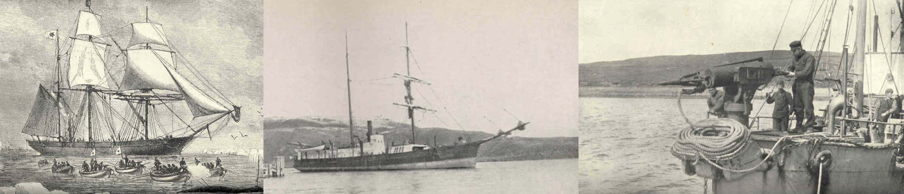
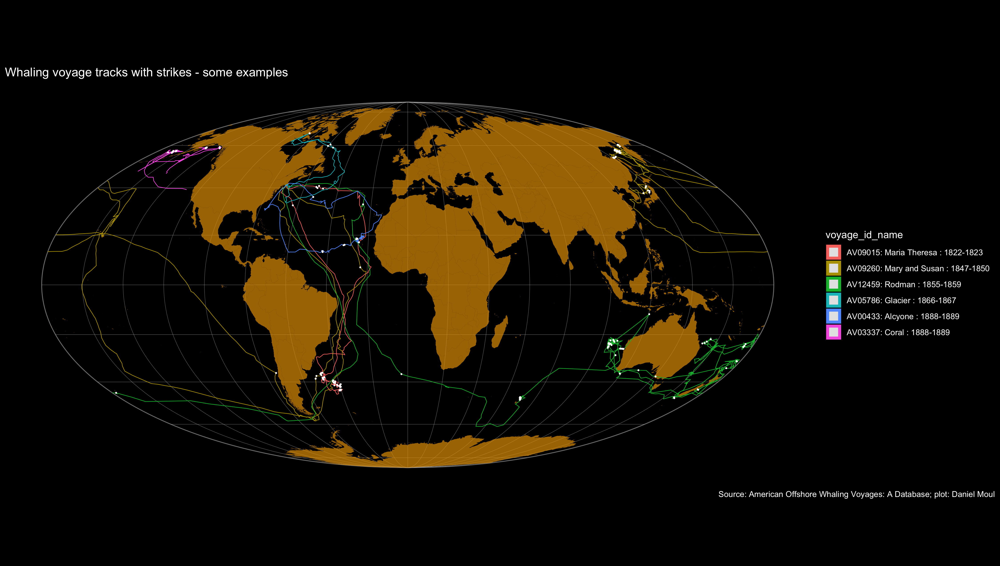

2 Overview

2.1 The data
This historical data comes in the form of three tables, as noted on the whalinghistory.org download page and Crew List page:
American Offshore Whaling Voyages database (Lund and Smith 2021-10-20)
containing one or more records for each American voyage for which evidence was found—at the least, the name of the vessel and/or master, the port and the approximate date of starting and ending. A basic suite of information is included for most voyages, and usually substantial additional information is included on the ship’s capacity and rig, declared destination, and amount of whale products. Basic biographical information about the master is included where known.
American Offshore Whaling Logbook database (Lund and Smith 2018-04-01)
containing records transcribed from whaling log books giving information on the whales seen and captured, and the date and the location of the vessel. These data were extracted from the original whaling logbooks during three separate scientific research projects, one conducted by Lt. Cmdr. Matthew Fontaine Maury in the 1850s, the second conducted by Charles Haskins Townsend in the 1930s, and the third conducted by a team from the Census of Marine Life project (CoML, www.coml.org) between 2000 and 2010. Data from each separate project is also available here.
American Offshore Whaling Crew Lists (Lund and Smith 2020-03-02).
Crew lists for whaling voyages recorded at the customs houses in New Bedford, Fall River, and Salem, Massachusetts, and in New London, Connecticut, have been compiled as part of various projects and from various sources over the years. We have gathered these crew lists in a single searchable, sortable database.
I make two simplifying assumptions without attempting to justify them:
- The voyages in this dataset are a sufficiently good representation of all American whaling voyages to make general statements about the rise, decline, and some characteristics of the American whaling industry
- Data quality issues do not overly compromise this purpose, particularly after using the techniques summarized in Section 11.1 Dealing with errors, duplicates, and omissions.
2.2 Why whaling?
Prior to the industrial revolution, products derived from whales included oils for lanterns, candles and other purposes, high-quality wax, and strong rods and plates that today would be made of plastic or metal. See the good Whales and hunting overview at www.whalingmuseum.org .
2.2.1 The whales and the products derived from them
Sperm and right whales were most commonly hunted for sperm oil (a liquid wax) and whale oil respectively. Species hunted for their baleen included humpback, bowhead, right, and gray. The records include a relatively small number of non-whales: pilot whales, orca (killer whales; formerly called grampus whales), and dolphins. Fin whales (also called finback whales), though large and having baleen, were not hunted much when whalers used open boats. Once steam-powered ships and explosive harpoons made it safer for crews, and once other species became rarer, harvesting fin whales became more common. In this data set one does not see this significant, later trend. See Section 7.1 Most Common Species and Section 7.2 Less Common Species.
Whaling crews logged encounters with whales in their logbooks. The logbook table standardizes these encounters into sightings and strikes (harpooning). Each encounter may have included more than one whale. Tries indicate the number of whales that were processed by the crew after a recorded strike. Sometimes the logs recorded “whale” without identifying the species. In the dataset this occurred in 29% of the encounters. Looking at where “whale” encounters occurred, they seem to be a mix of Sperm and Right whales. In total the data set includes the following:
| Encounters (sightings or strikes) |
||
| species | n1 | pct |
|---|---|---|
| Sperm | 22,543 | 31.4% |
| Whale | 20,975 | 29.2% |
| Right | 15,031 | 21.0% |
| Finback | 3,759 | 5.2% |
| Pilot | 2,750 | 3.8% |
| Bowhead | 2,277 | 3.2% |
| Humpback | 2,266 | 3.2% |
| Orca | 1,333 | 1.9% |
| Gray | 556 | 0.8% |
| Blue | 229 | 0.3% |
| Dolphin | 16 | 0.0% |
| Total | 71,735 | 100.0% |
| 1 A sighting or strike involved one or more (sometimes many more) animals | ||
Whale names have changed over the years. Finback are more commonly called fin whales today; orca are also known as killer whales and previously were known as grampus whales.
As seen in Figure 7.26, harvesting right and sperm whales peaked in the 1840s, pilot and bowhead whales in the 1850s, and the other less common species in the 1860s and 1870s. See Chapter 7 Whales and Chapter 8 Products.
2.3 Where did American whaling vessels go to find whales?
In short: they went where the whales were. For example:
- In the south Atlantic near Argentina: Maria Theresa (AV09015)
- In the north Pacific near the coast of Russia: Mary and Susan (AV09260) and near Alaska: Coral (AV03337)
- Near Australia: Rodman (AV12459)
- North to the Husdon Bay: Glacier (AV05786)
- In the mid Atlantic: Acycone (AV00433)
For details see Chapter 3 Voyages, Chapter 4 Vessels, and Chapter 10 Voyage Tracks.

2.4 Financial returns
The mix of product sold at the end of whaling voyages varied by voyage and decade. Crews were paid according to the lay system: a portion of net profits after expenses. The financial returns for investers and crew of the higher ranks (positions) were uncertain but overall very attractive in the mid nineteenth century, declining over the decades until the industrial revolution offered better return on investment for those with capital and more attractive options for crew, including more certain wages that did not require them to be away from home for months or years at a time. The center of the whaling business moved to Norway and other nations as American involvement declined. See Chapter 5 Masters, Chapter 6 Crew and Chapter 9 Financial returns.